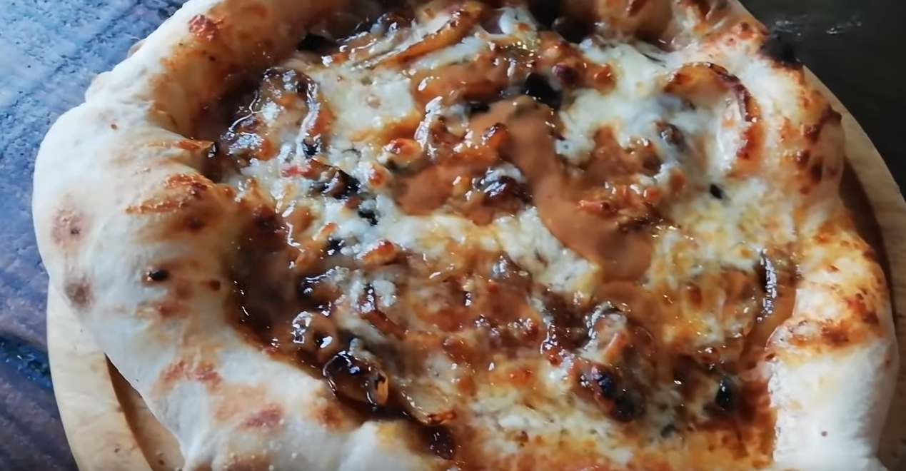

Anchovy, Onions, and Butterscotch

Description
What's a more classic pizza topping than anchovies? This sweet and savory pizza combines the traditional flavors of anchovy and onion, with the sweetness of butterscotch. This unique pizza combination is sure to impress.
Ingredients
Instructions
- Preheat oven to 475 degrees
- Stretch pizza dough to 12 inch circle.
- Carmalize your onions.
- Melt down butterscotch candies to form a sauce.
- Add a nice heaping of our homemade sauce. Spread evenly across the dough
- Generously add anchovies and and onions.
- Cover the pizza with mozzarella.
- Drizzle butterscotch sauce over the top of pizza.
- Bake for 15-20 minutes or until crust is golden brown.
Back to recipes